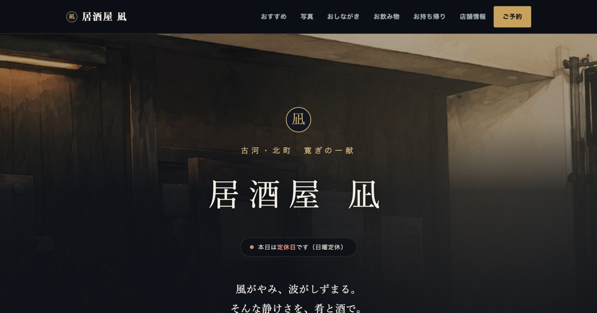
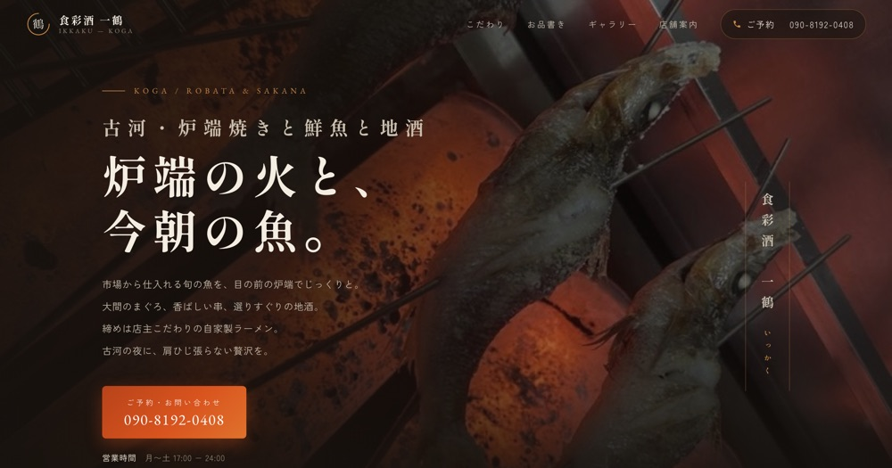

飲食店・小規模事業者のためのホームページ制作
食べログの中の一軒から、
選ばれる一軒へ。
グルメサイトやGoogleに情報はある。でも、お店の"顔"になるページはまだない——。creative works+ は、先に完成イメージのホームページをおつくりし、実物をご覧いただいてから仕上げる制作サービスです。
一串にこめて。
※ 画面はイメージです。掲載店舗は架空のものです。
ポータルサイトだけに、
お店の集客を預けていませんか?
グルメサイトもGoogleマップも、お客様との大切な接点です。ただし、そこは「あなたのお店のページ」ではなく「みんなの検索結果」。こんな課題を感じたことはありませんか。
すぐ隣に、競合店が並ぶ
検索結果ではライバル店と常に横並び。せっかく見つけてもらっても、評価の数字だけで比較されて他店に流れてしまうことがあります。
広告が他店へ誘導する
店名で検索したお客様の画面にも、他店の広告が表示されます。自分のお店のページのはずが、他店への入り口にもなっているのです。
お店の雰囲気が伝えきれない
載せられる写真や文章のかたちが決まっていて、内装のこだわりや店主の想いまでは届きません。どの店も同じ見た目になってしまいます。
「あなたのお店だけのページ」が、
看板であり、受け皿になる。
指名検索の受け皿に
店名で検索してくれたお客様を、他店の広告が一切ない自分のページで迎えられます。一度来てくれたお客様との再会の場所にもなります。
お店の世界観をそのまま
写真の大きさも、メニューの見せ方も、言葉づかいも自由。カウンターに座ったときの空気感まで伝わるページをつくれます。
情報はいつでも最新に
営業時間の変更、季節のメニュー、臨時休業のお知らせもすぐに反映。Googleビジネスプロフィールと連携し、地図検索からの導線も整えます。
つくったのは、ページではなく
「お店の顔」です。
業態や価格帯に合わせて、お店ごとの世界観をひとつずつ設計しています。

居酒屋 凪
名物の牛のたたきと厚焼玉子で知られる一軒。「風がやみ、波がしずまる」という店名の由来を、深い藍と灯りの色で表現。

イタリアン Bonne Qualité
ワインと出来立てピッツァが主役の、明るく上質な一軒。ホーム・メニュー・ランチ・ディナー・ドリンクの複数ページで構成。

食彩酒 一鶴
大間まぐろと炉端の炭火焼きが看板の一軒。炎の色をそのまま画面に移し、締めの自家製ラーメンまでを一枚で見せる構成。
かかる費用は、
初期費用と月額のふたつだけ。
- お店の世界観に合わせたオリジナルデザイン
- お品書き・こだわり紹介などのページも込み
- スマートフォン対応
- 電話予約・地図への導線設計
- スマホでの写真撮影も無料でお手伝い
- ドメイン取得・公開作業の代行
- 正式なご依頼から1週間以内に公開
- 軽微な変更に月1回まで対応
(営業時間・価格の修正、写真の差し替え、お知らせの掲載など) - サーバー・ドメインの管理
- 表示トラブル時の対応
- いつでも解約OK(違約金なし)
※ お支払いは、納品時に初期費用を一括(銀行振込・現金)、公開後は月額費用のみ。
※ 月1回を超える変更は1回3,000円〜。ページの追加や大きなリニューアルは、内容に応じて別途お見積りいたします。
標準で対応できること(料金内)
- ネット予約ページへのリンク設置
(食べログ・ホットペッパー・LINEなど) - 電話をタップでかけられる予約導線
- Googleマップの埋め込み
- InstagramなどSNSへの導線
- テイクアウト・季節メニュー・お知らせの掲載
別途ご相談で対応できること
- 英語などの多言語ページ
まず完成イメージをお見せします。
決めるのは、見てからで大丈夫。
「どんなものができるか分からないまま契約する」不安をなくすため、creative works+ では先にホームページの叩き台をおつくりしてからご提案します。
叩き台のホームページを制作
食べログやGoogleに公開されている情報・写真をもとに、お店のホームページの叩き台を先におつくりします。この時点で費用はかかりません。
実際の画面をご覧いただく
完成イメージをその場でスマートフォンやパソコンの画面でご確認ください。叩き台は非公開のプレビューで、正式な公開はお店の許可をいただいてから。ピンとこなければ、お断りいただいて構いません。
一緒に最終調整
ご依頼をいただいたら、メニューや写真、営業時間、お店のこだわりを伺いながら、叩き台を「本当のお店の顔」に仕上げていきます。写真が足りない分は、スマホでの撮影もその場でお手伝いします。
公開ご依頼から1週間以内
ドメインの取得から公開作業まで、むずかしいことはすべて代行します。パソコンが苦手でも大丈夫です。
運用サポート
公開後は月額保守で伴走します。営業時間の変更やメニューの入れ替えなど、軽微な修正は月1回まで対応します。
気になることは、
ここでもお答えします。
パソコンが苦手でも、持てますか?
はい。制作も公開後の更新も、こちらで代行できます。オーナー様にお願いするのは「お店のことを話していただくこと」だけです。
食べログやGoogleはやめたほうがいいのでしょうか?
いいえ、併用がおすすめです。ポータルは「新しいお客様との出会いの場」、自社ホームページは「お店を選んでもらう決め手」。役割が違います。
完成までどのくらいかかりますか?
正式にご依頼いただいてから、1週間以内の公開が目安です。先に叩き台ができているので、短期間で仕上がります。
制作後の費用はかかりますか?
月額5,000円(税込)の保守費のみです。サーバー・ドメインの管理と、営業時間やメニューの変更といった軽微な修正(月1回まで)が含まれます。月1回を超える変更は1回3,000円〜、ページの追加や大きなリニューアルは別途お見積りです。
見せてもらったホームページを、断ってもいいのですか?
もちろんです。叩き台の制作とご提案は無料で、正式にご依頼いただくまで費用は一切かかりません。お断りの場合は、おつくりした叩き台のデータも削除します。
途中でやめたら、ホームページはどうなりますか?
いつでも解約でき、違約金はありません。サイトのデータは一式お渡しします。ドメインはお店の名義で取得するので、解約後もご自身や他の会社で同じアドレスのまま運用を続けられます。
支払い方法を教えてください。
銀行振込または現金で、納品時に一括でお支払いいただきます。完成したホームページを実際にご確認いただいてからのお支払いなので、安心です。
ネット予約やSNSとの連携はできますか?
すでにお使いの予約ページ(食べログ・ホットペッパー・LINEなど)へのリンク設置、Googleマップ、InstagramなどSNSへの導線づくりは標準で対応します。英語などの多言語ページは、内容に応じて別途ご相談ください。
運営者情報
- 屋号
- creative works+(クリエイティブ ワークス プラス)
- 代表
- 丸藤 啓太
- 拠点
- 茨城県
- 事業内容
- 飲食店・小規模事業者向けホームページの制作・運用
- 連絡先
- creativeworks.plus@gmail.com
(24時間以内にお返事します) - お支払い
- 銀行振込・現金(納品時に一括)
まずは、あなたのお店の
完成イメージを見てみませんか。
食べログやGoogleの情報をもとに、ホームページの叩き台を無料でおつくりします。続けるかどうかは、実物を見てから決めてください。しつこい営業はいたしません。
無料相談を申し込むメールには24時間以内にお返事します。